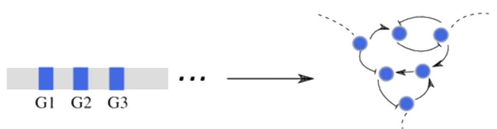
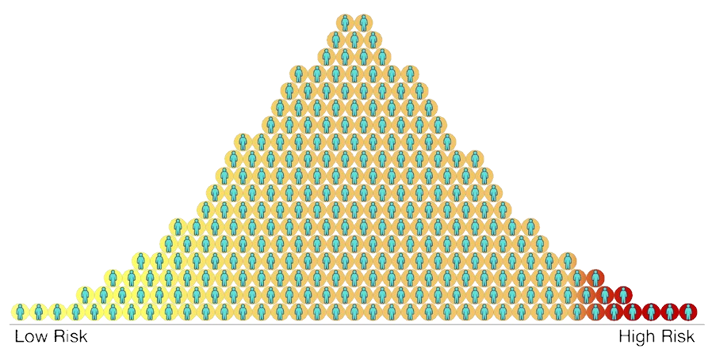
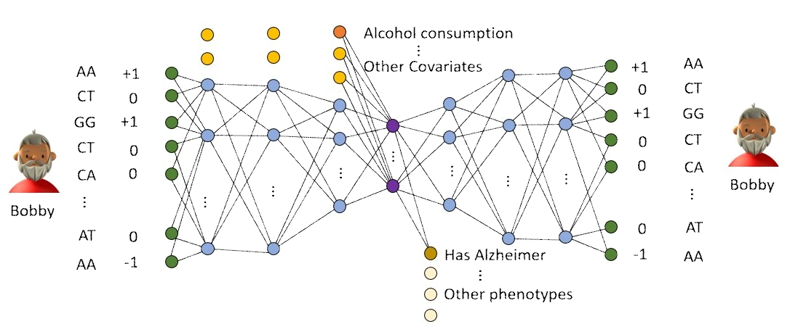

Deep Learning applied in Genetics
By Matthieu de Hemptinne
Promotor: Danielle Posthuma
Co-promotor: Tom Heskens
Who am I?

What is done now?
Genome wide association study
GWAS
Problem
Does not take into account correlation between snps
Polygenic Risk Score
PRS
Problem
To the core it is only Counting
How can that be improved?
Introducing deep learning
General idea
Autoencoder
Dimensionality reduction deep learning model
Clustering and novel method for PRS
Finding centroïdes
What are the challenges?
Population stratification and Linkage Disequilibrium
Genomics: biased introduced
The curse of dimensionnality
ML: Terrible performance when too many features
Testing it out
First generated dataset
introduce list